Gopher Request, made simple.
This is your step-by-step guide to the Gopher Request app, for anything you need done: a delivery, a haul, a move, a ride, or a hand around the house. You describe what you need and decide what to pay, and a trusted local worker comes to you.
Sign in
Gopher is passwordless, so there's nothing to remember. You sign in with your mobile number and a 6-digit code we text you. New members start on the same screen.
- Open the app. Under Sign in or sign up with your number, enter your 10-digit mobile number.
- Tick I agree to the SMS disclaimer & Terms. and tap Send verification code.
- On Check your texts., enter the 6-digit code and tap Verify Code. If you've been here before, you land on Home. If the number is new, sign-up starts (see the next section).
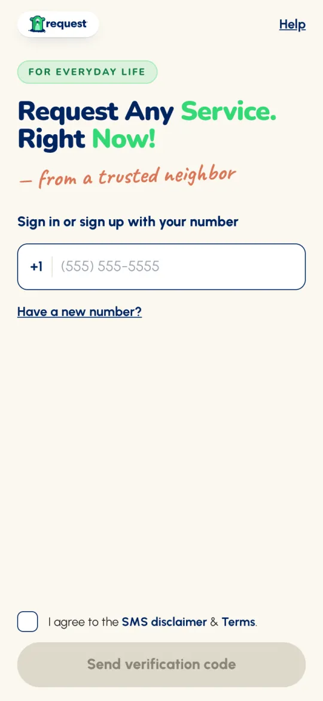
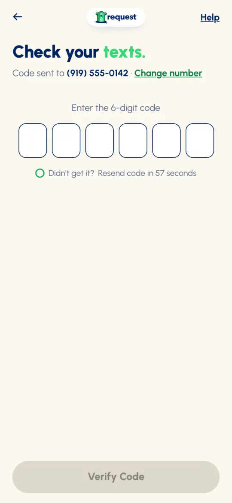
Create your account
There's no separate sign-up button. A new number goes straight into a short set-up, one question per screen, counted Step 1 of 8 to Step 8 of 8:
- Your name. Use your legal name. It's only shown to a worker once you hire them.
- Your birthday. Pick the month, day and year. You need to be at least 16 to join.
- Your email, typed twice.
- Your address. Tap Use my current location or search for it.
- How did you discover Gopher? If a member referred you, choose Referral and enter their Gopher ID in Referrer ID (optional). They can find it on their My Profile. If you joined from someone's invite link, it's filled in for you.
- Your photo. This one is required. It reassures local workers you're a real person, and it's only shown to a worker you hire.
- Look good? Check everything and tap Confirm Account →.
- Check your email. Enter the code we email you, and you're in.
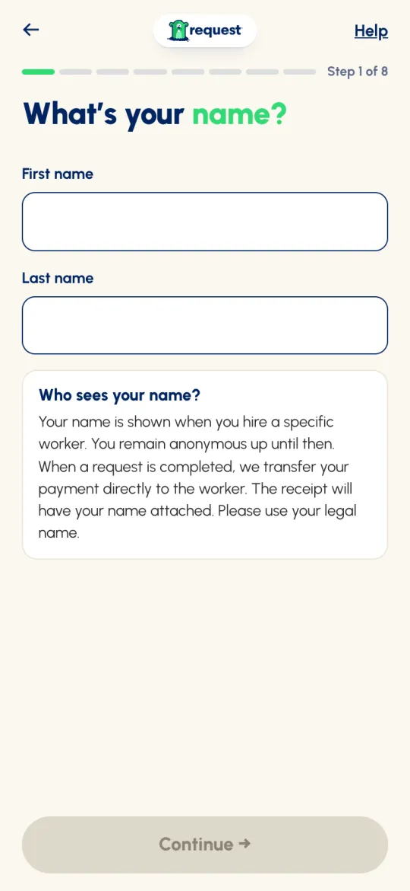
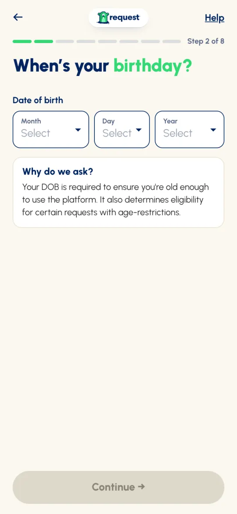
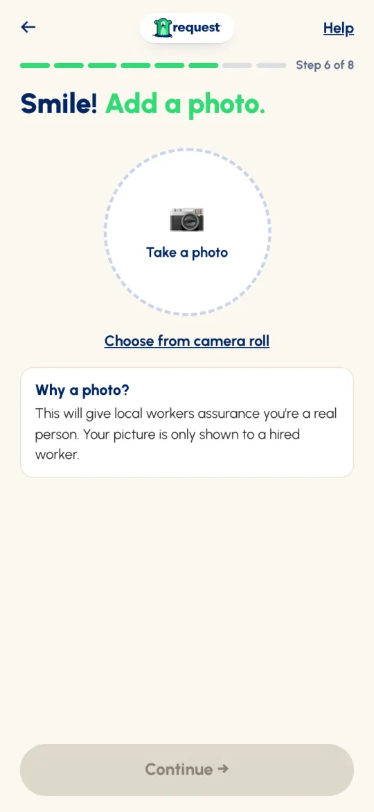
Find your way around
The app has five tabs on a floating bar at the bottom of the screen: Account · Inbox · GO · Refer · More. The big green GO in the middle always takes you back to Home. A red number on Inbox means unread messages; on Account, it means a card was declined.
Home, top to bottom
- ↻ Refresh at the top right. Home also refreshes itself every few seconds.
- A greeting, What can we help you with today?, or a count of your live requests, like You have 1 current request, 1 needs you.
- Your request cards, one per live request. Swipe sideways when you have more than one.
- …ask iQ: the Gopher iQ search bar. Type what you need, or ask a question like “How do I cancel a request?”.
- Start a request: the eight services. The three buttons beside it switch the view, in this order: Row with Request again, Big cards (the default) and Two columns.
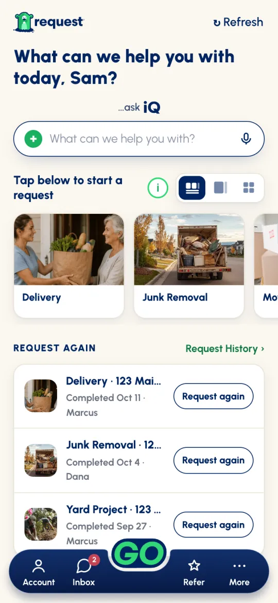
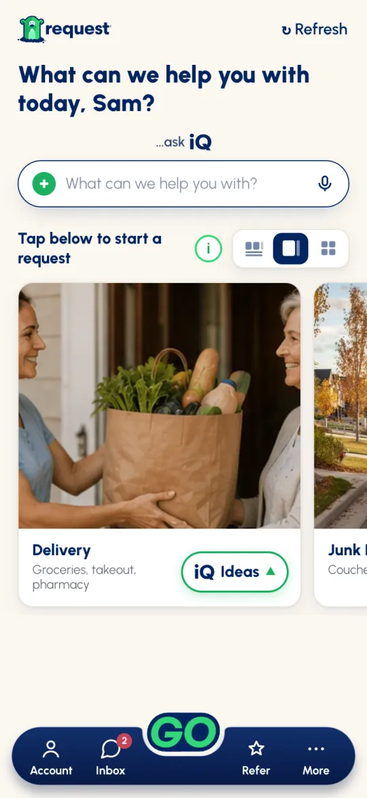
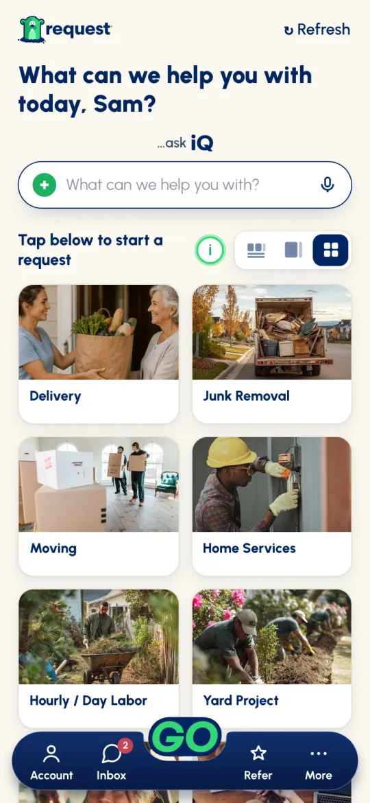
Profile & payment
Tap Account for everything about you: your profile card, Request History, Payment Account, and, if you're 21 or older, Add TrustShield Verification.
My Profile
Tap your profile card to open My Profile. It shows your Gopher ID (the number friends enter when you refer them), your personal info, stats and verification status. Tap your photo to change it. Email, Address and Source have an Edit link.
Payment Account
How you pay. Your default card is shown at the top, and every request uses it unless you change it on the review step. Tap a card to Set as default, give it a Card name you'll recognise (like “Work card”), or delete it. Delete Card removes the card straight away, with no second check.
Adding a card
Tap + Add a payment method. Stripe, our payment partner, opens its secure sheet to add your card. The name on the card and your billing address are required, and they're pre-filled from your profile. Then comes Confirm it's you: we text a 6-digit code to the phone on your account. Enter it and tap Verify and save card. The code expires in 5 minutes, can be resent once, and five wrong tries ends the attempt. The card isn't saved until the code is confirmed.
You don't need a card until your first request. If you haven't added one, the review step's button reads Choose Payment instead of Submit Request.
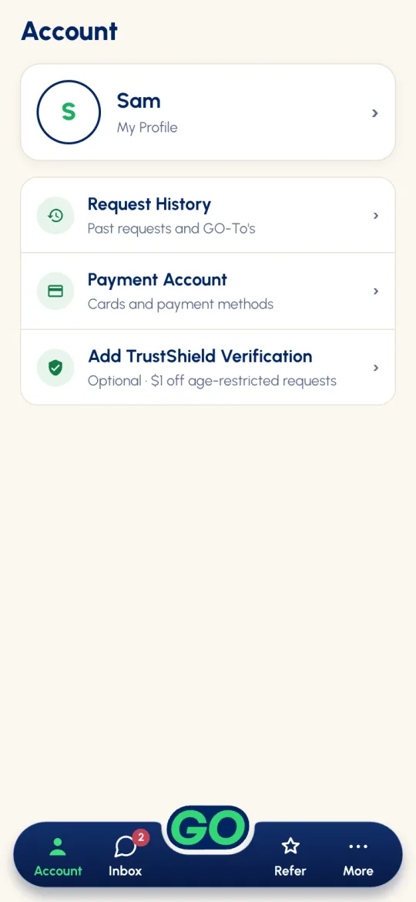
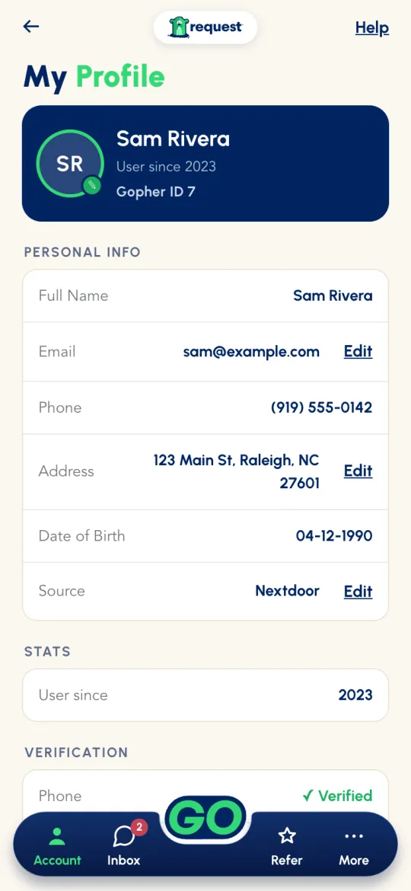
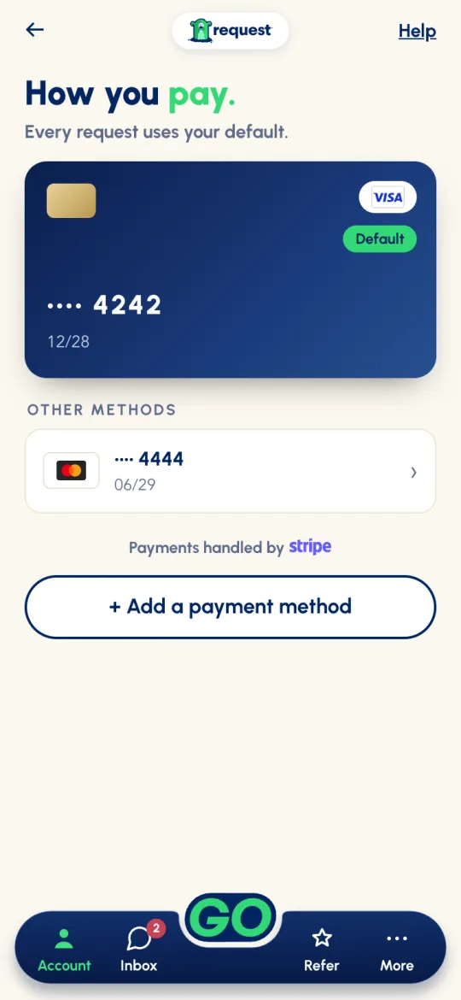
Pick the service that fits
On Home, tap the service that fits best. The service you choose decides which workers see your request, because workers choose the services they want to see. It also decides what the next steps ask for, so pick the closest match.
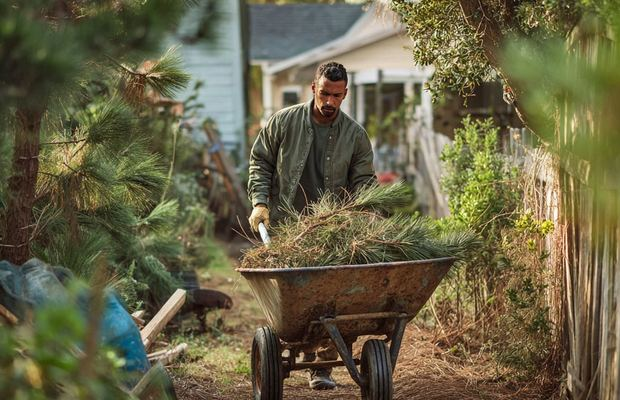
Not sure where to start?
- iQ Ideas. On the Big cards view, each service has an iQ Ideas button with five popular requests to start from, plus Something else →.
- …ask iQ. Type what you need into the search bar on Home and Gopher iQ suggests where to start.
- Custom Task is for anything that doesn't fit the other seven. Before you continue, the app shows you the other seven services, in case one of them fits. If yours is truly custom, tap Continue with Custom Task.
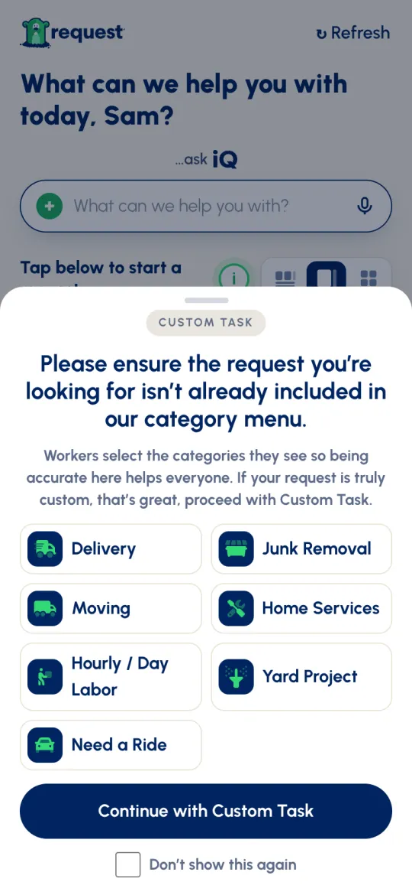
Describe the job clearly
This is the most important screen. What you write in Describe what you need is exactly what workers read when deciding whether to take your job, so be specific. You have up to 300 characters, and you can tap Add a pic (up to 3) so workers know exactly what they're walking into.
✅ A great description
“I need 12 yards of mulch laid in my backyard. Worker must bring their own equipment.” (plus a photo)
🚫 Too vague
“Need mulch spread in my backyard.”
What else Step 2 asks, by service
| Service | Also on this screen |
|---|---|
| Delivery | Delivery type: This delivery requires a purchase if your worker needs to buy something for you; then enter the Cost of items needed. Includes age-restricted items is shown to members 21 and older (see Age-restricted). |
| Need a Ride | Rider info: number of riders, number of large bags, and special instructions for your driver. Rides have no description or photos. |
| Junk Removal | Item info: how many items (go past 4 and it switches to Multiple items involved), and Includes hazardous material. |
| Moving | Item info: how many items (go past 4 and it switches to Multiple items involved). |
| Custom Task | Optional criteria: whether the task includes age-restricted items, and This task requires a purchase with the Cost of items needed. |
| Home Services, Hourly / Day Labor, Yard Project | Just the description and photos. |
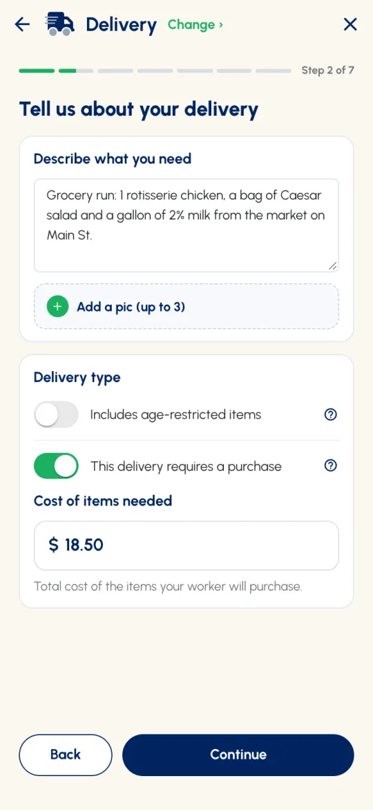
Who should do the work?
Worker setup (Junk Removal, Moving, Yard Project, Hourly / Day Labor)
Turn on More than 1 worker needed and set how many. You'll hire one worker, who is responsible for bringing the others. On Hourly / Day Labor you can also choose Pay by the hour instead and set the number of hours.
How would you like to select your worker?
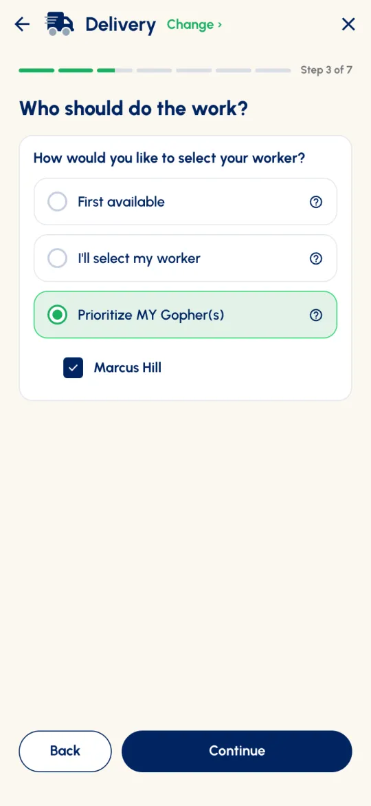
Where is this going?
Delivery, Need a Ride, Moving and Custom Task ask for a Pick-up location and a Destination. Junk Removal, Home Services, Hourly / Day Labor and Yard Project just need the address where the work happens.
- Tap an address box to open Choose location. Search for an address, or tap Use my current location, My home address, or one of your saved addresses. Tap the ☆ next to a search result to save it as Home, Work or a name you choose.
- Add a Unit/Apt # so your worker finds the right door (not needed for Yard Project).
- Moving and Hourly / Day Labor ask how many flights of stairs there are. On Moving, switch on Single-location move if you only need help at one address.
- On a Delivery, switch on Worker can purchase from anywhere if any store will do. Your review will say Pick-up: Worker's choice.
- On a Custom Task, No pick up — work happens on site is on by default. Switch it off if your worker needs to collect something first.
- Got more than one stop? Enter the final destination here and list the other stops in your description. Use full store addresses, not just names.
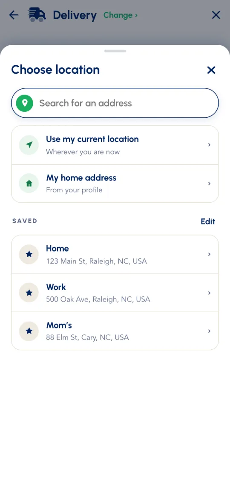
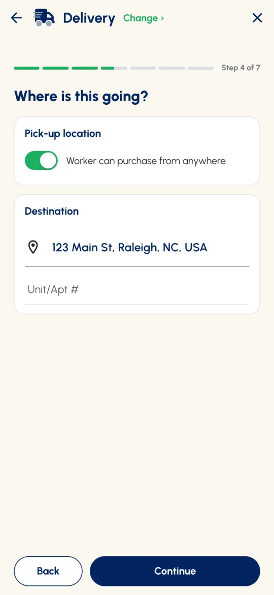
How would you like to pay your worker?
Gopher is unlike any other platform: you set the price, and 100% of it goes to your worker. The app says it right under the box: “Exact amount your worker takes home: 100% of your offer. Request fees are shown at review.” Think of your offer as a fair wage, not a tip. Your worker works for you, not for Gopher, Inc.
- Bids are available on Junk Removal, Moving, Home Services, Yard Project, Custom Task and Hourly / Day Labor, including crew jobs. They aren't available on Delivery, on Need a Ride, or when Hourly / Day Labor is paid by the hour. On a Custom Task, a request for bids can't include buying items.
- On Hourly / Day Labor, your offer is per worker, and the app shows the Combined wages for the crew. Paying by the hour? Enter Your hourly offer to your worker and the app works out the total.
Not sure what to offer? Ask Gopher iQ
On Delivery, Need a Ride, Moving and Junk Removal, tap Tap here for a suggested offer range. Gopher iQ shows a Low · Fair · Generous range based on thousands of similar requests in your area. Slide to the amount that works for you and tap Submit. You always have the final say. If your offer is on the low side, the app says so, and you can still Send as-is.
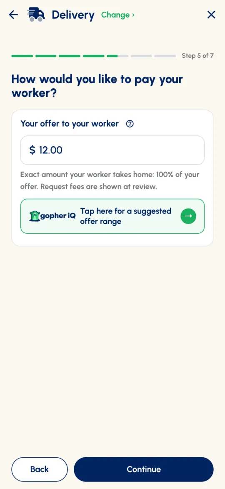
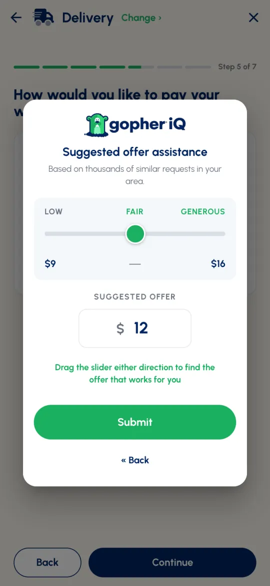
Let's review your request
Everything you entered is on one card: the service, description, addresses, who you asked for, the cost of items, your offer, the Request fee and the Total. From here you can:
- Tap the ⓘ by Request fee to see what's in it (see Fees).
- Tap Have a Promo Code? to add a code and tap Apply.
- Check the card it's going on (shown like •••• 4242) and tap Change › to pick another.
- Open Want a second set of eyes? and Gopher iQ will suggest anything worth adding for your service. If your description already looks complete, it says Gopher iQ reviewed your request 👍. This isn't shown on rides.
- Open What to expect after your request is submitted for a quick rundown of billing and the hand-off.
When do you need this?
⚡ Need ASAP
Match me right now. Your request stays open for about 1 hour on Delivery, Need a Ride and Custom Task, and about 6 hours on Junk Removal, Moving, Home Services, Yard Project and Hourly / Day Labor. If no one accepts in that time, it ends at no charge.
🗓️ Schedule for later
Choose a Flexible window (within 24 hours, within a week, or within 2 weeks), or Pick exact time, anywhere from 1 hour to 2 weeks away.
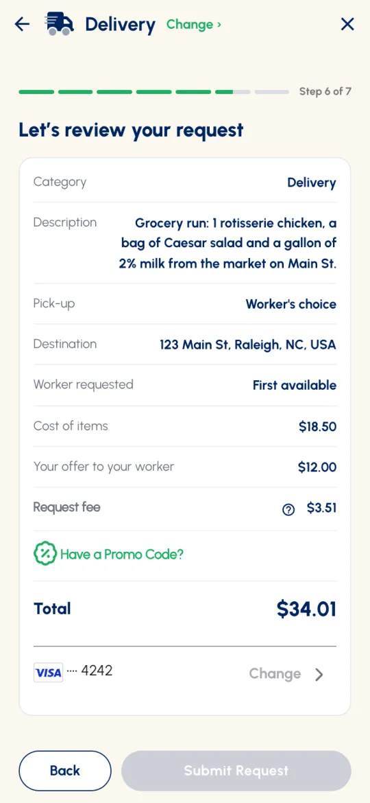
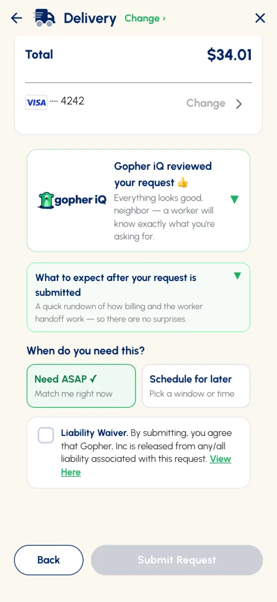
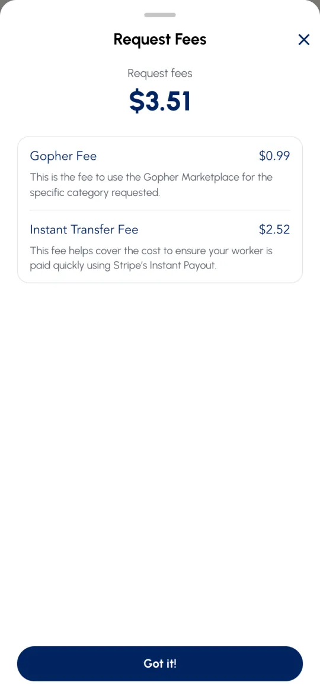
Request submitted! 🎉
You'll see Looking for your worker…, your order number, and a summary showing how long the request stays open. From here, tap Track it on your home screen →, Edit request, or Cancel request. When a worker accepts, or an offer needs your answer, the app takes you to Home on its own.
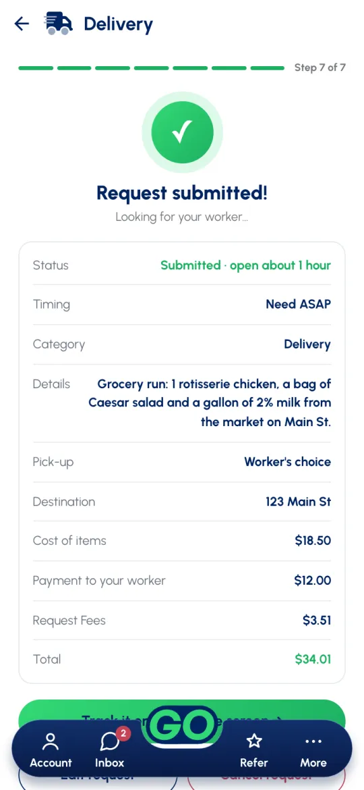
Tracking your request
Every live request has a card on Home. The coloured label tells you where it stands, and anything that needs you goes to the top:
- Submitted Looking for your worker, with how long it stays open. Scheduled booked for later.
- Needs you Something's waiting on you: new offers, a counter-offer, a cost adjustment, a new time, or a finished job to confirm.
- Accepted In progress On the way Wrapping up Your worker is on it.
- Payment failed Your card was declined. Tap Update → to add another card and keep the request.
- No worker found No one accepted in time. You weren't charged. Tap it to Request again.
The live request screen
Tap a card to open the request. You'll see a map with the pick-up and drop-off, a step bar (Accepted → In progress → Completed, plus Item purchased or Item picked up when there's shopping), and your worker's card with Text and Call. Text opens your in-app chat. Call phones your worker. Once your worker is on the move, their pin shows on the map with when it last updated. Tap Details to see your whole request, the card you're paying with, and the hold on your card.
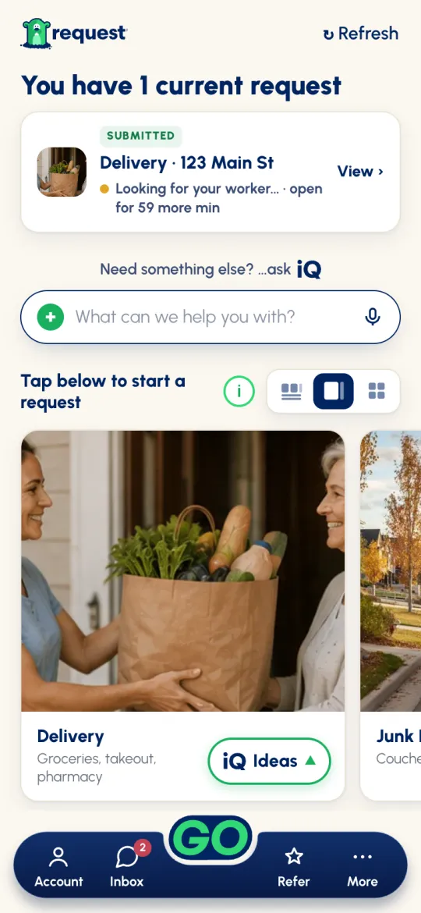
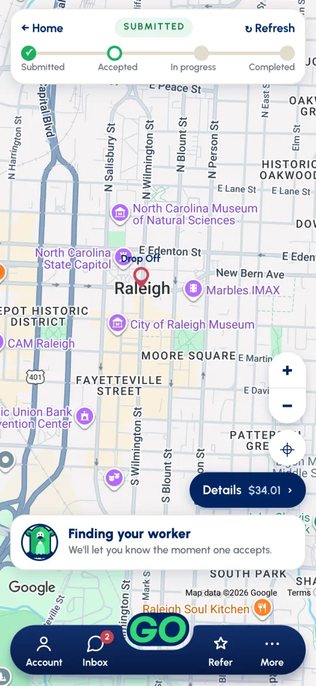
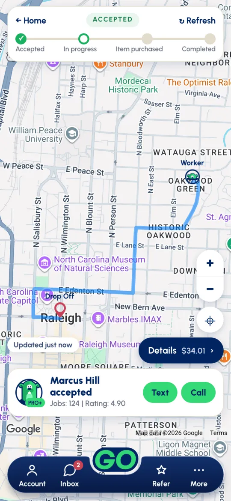
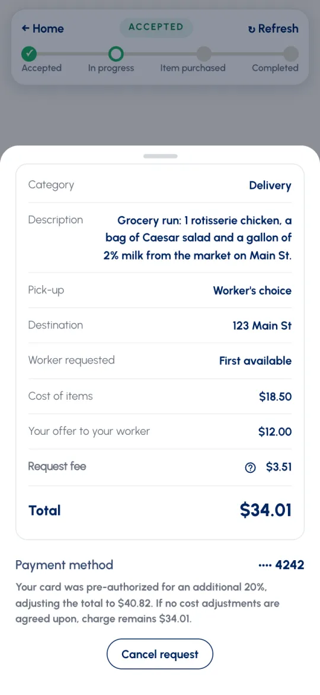
When something goes sideways
If no one accepts in time, your card turns grey. Tap it for the No worker took this request page: you weren't charged, and Request again brings the same details back, ready to edit. A higher offer or a later time can help. If your card is declined, a red Your card didn't go through sheet appears. Tap Update payment info to add another card and keep the request.
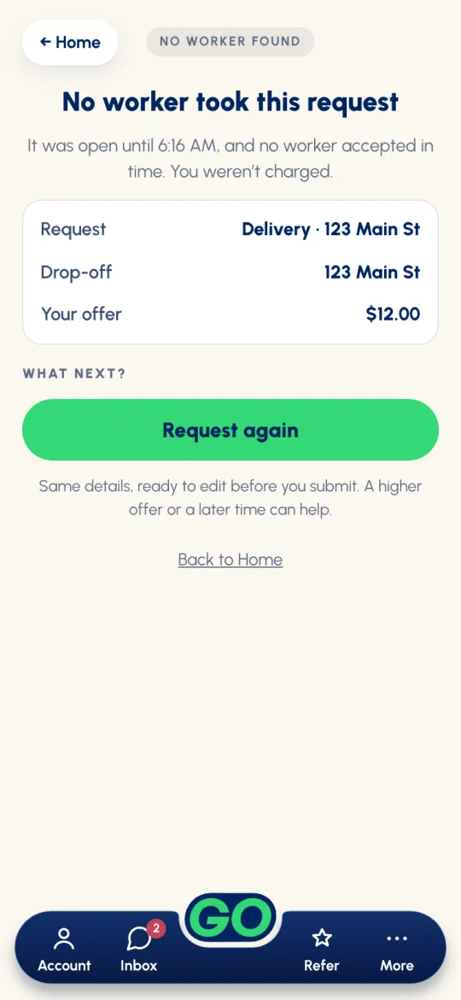
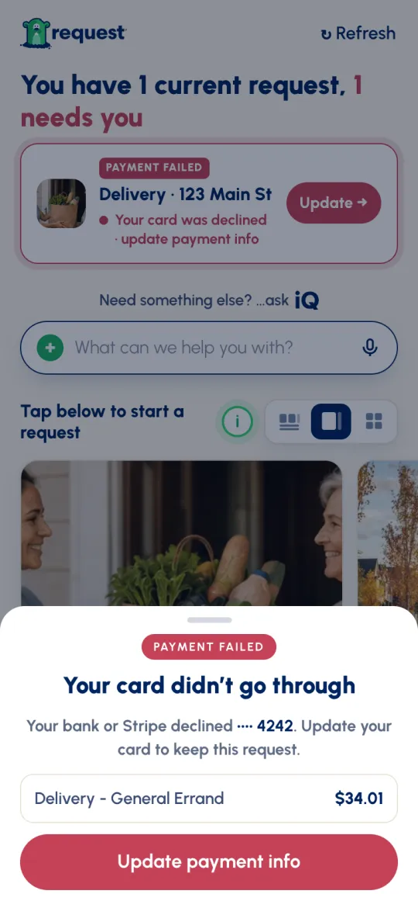
Offers & hiring
If you chose First available, there's nothing to do: the first worker to accept is booked, and your card shows Accepted. The same goes for a MY Gopher you picked who accepts. Otherwise, a Needs you card appears. Tap Review → to see everyone who's interested.
Each offer shows the worker's name, a PRO or PRO+ badge if they have one, their jobs and rating, and what they're asking. Tap their name or Profile to see their background-check and identity badges and their previous jobs. Then:
- Hire books that worker. Hiring is the start: there's no separate start button.
- Deny passes on that worker.
- Message asks them a question first.
- Counter-offers. A worker may ask for a different price. The card shows the new total, and What changed › compares it line by line. Accept with Hire for $X.
- Bids. If you asked for bids, each one shows the worker's price. Tap Hire, check Hire this worker, then tap Submit Request.
- Crew jobs. You hire one worker, who has agreed to show up with the whole crew.
- A worker from farther away. If you chose First available on a Delivery or an ASAP ride, a worker more than 15 miles away needs your OK before they're booked, and their card shows how far they are.
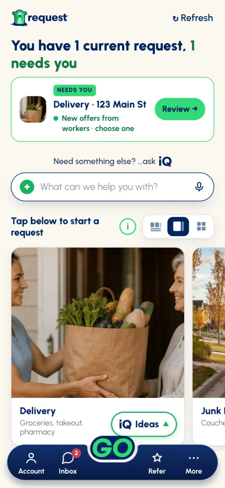
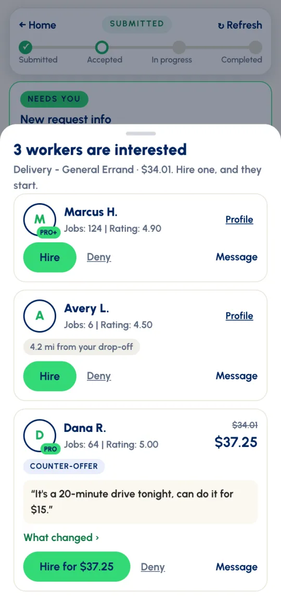
Cost adjustments & new times
Sometimes the job changes once it's under way. Your worker can ask, and you decide.
- Cost adjustment. If the items cost more than you estimated, your worker sends a Cost adjustment with the receipt, the new total, and a line-by-line was/now comparison. Tap Approve $X or Decline. The 20% hold on your card is there for exactly this.
- New time. On a scheduled request, your worker can propose a different time. Tap Accept for the new time or Keep the original. If you need a different time yourself, message your worker.
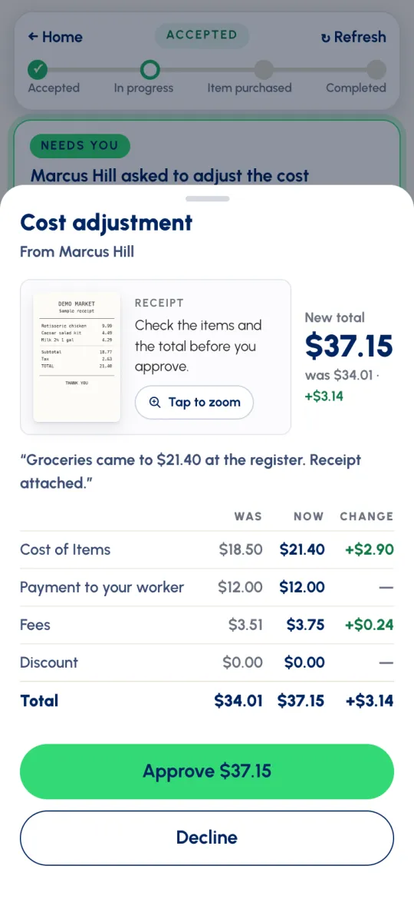
Messaging your worker
All messaging happens inside the app. Open a chat from Message on an offer, Text on your live request, or the Inbox tab. You can message interested workers before you hire, and chat freely with your worker once they're hired, including sending photos.
The Inbox holds your request chats and notes from Gopher Support. Search it, swipe a message left to delete it, and find deleted ones under Deleted for 90 days. Support notes there are one-way. To talk to us, use More → Help Center → Message Support.
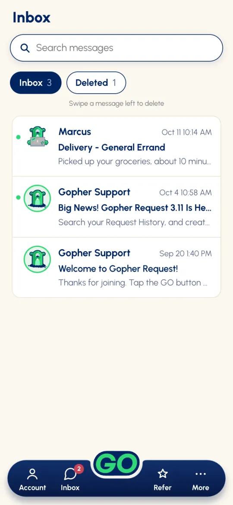
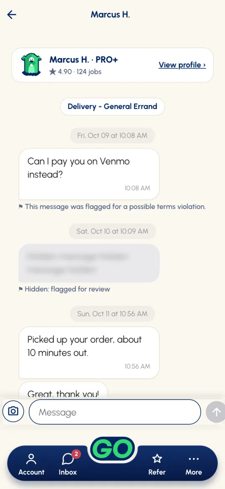
Confirm & rate
When your worker marks the job complete and has added their photos (or chosen to skip them), you get a push notification and a text, and your card says marked it complete · confirm or dispute. Tap Confirm →.
- Check the photos, if your worker left any. They're at the top of the screen under View pic(s) of completed request. Tap one to see it full size.
- Check your receipt: what you'll pay, and what your worker earns.
- Tap Confirm completion once you've verified the job was done right. This finalizes your order and emails your receipt. It can't be cancelled or refunded afterwards.
- Rate your worker. Under How did {name} do?, tap a gopher hole from 1 to 5, add a comment if you like, and tap Done. A job well done deserves a 5.
- Tick Add {name} as a MY Gopher to save them for next time.
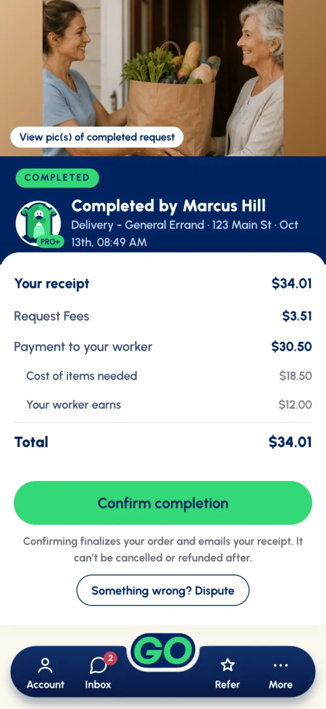
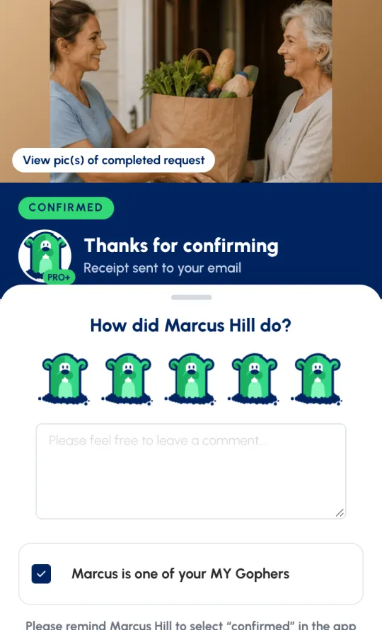
Something wrong? Disputes
A dispute is between you and your worker, and most get sorted out between the two of you. On the completed screen, tap Something wrong? Dispute.
- Under What went wrong?, pick a reason: Not finished, Missing or wrong items, Damage, Late or Other.
- In Details, say what happened in a sentence or two. A reason on its own isn't enough to send, so add a line. Then tap Submit dispute.
- Your request shows Dispute open. Text or call your worker. They can make it right, including sending a cost adjustment if that's the fix. Everything else in the app keeps working.
- Sorted? Tap Resolved? Confirm completion.
- Not sorted after 24 hours? Tap Unable to resolve to hand it to Gopher support. You'll see Pending dispute resolution until we decide, then Your dispute was settled.
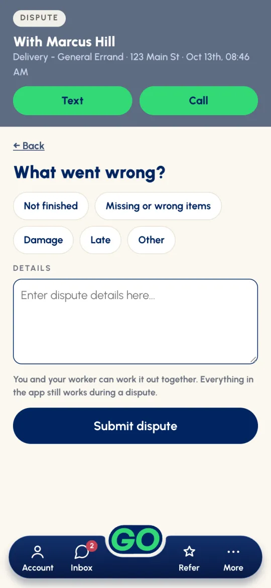
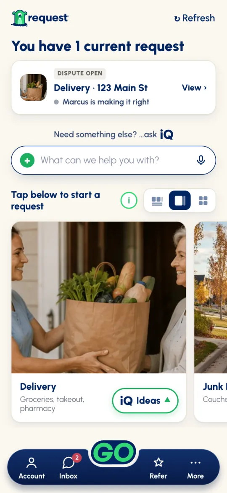
Cancelling
Before your worker starts, cancelling is free. Open your request, tap Details, then Cancel request.
- If no one has accepted yet, pick a reason and you're done.
- If a worker is booked, you'll see {name} is booked for this with three choices. Find a different worker puts your request back out with the same time and details, and the hold on your card just carries over. Message {name} lets you talk it through. Cancel it altogether cancels it. Changed your mind? Tap Keep my worker.
- On Cancel this request?, pick a reason and tap Cancel request, or Keep my request. If the reason is a scheduling conflict, the app suggests messaging your worker about a new time instead.
- Once your worker has started, the request can't be cancelled in the app. Message your worker or contact Support. A cancellation then may carry a fee of up to $5, plus the cost of any items already bought. See the Terms of Service for details.
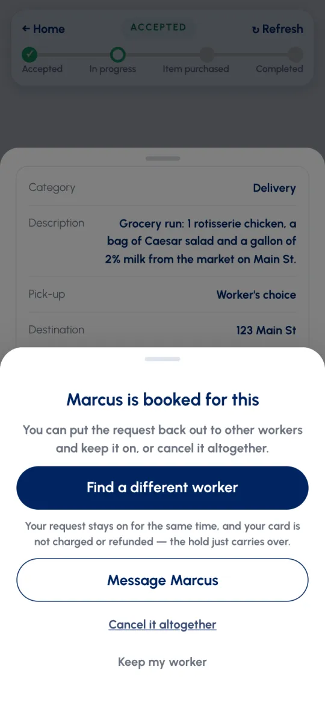
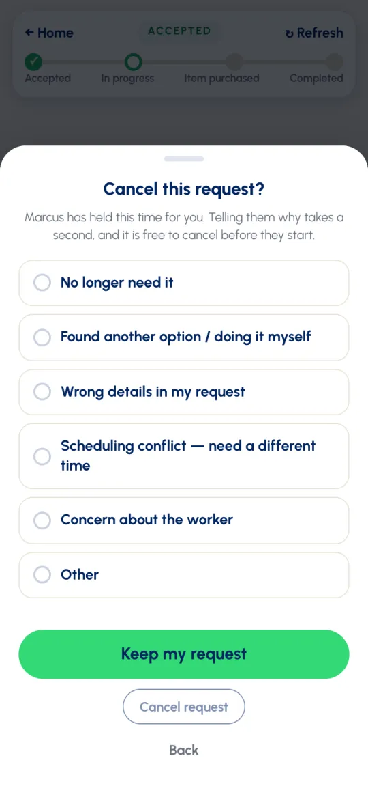
If your worker cancels
If your worker can't finish after accepting, they release the job with a reason instead of just disappearing. You'll get a notification and a page saying {name} cancelled your request, with two choices:
- Assign new worker puts it back in the marketplace with your original offer and terms. Your existing hold covers it, and nothing is re-charged. It gets a new request number.
- Cancel request closes it and releases your funds straight away.
Details can't be changed while you decide. To change anything, cancel and submit a new request. If you don't choose, the request cancels itself after about 15 minutes. Can't get to it in time? Support can repost it for you, with your funds still held.
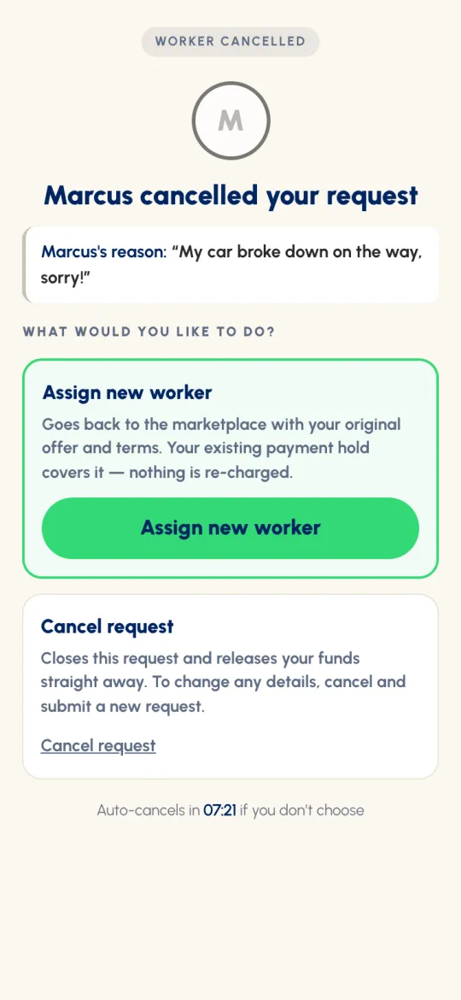
History, Request Again & -To’s
Finished requests live in Account → Request History. Live ones stay on Home. Filter with the pills across the top: All (the default), -To’s, Completed, Expired and Cancelled. You can also search by request number, type, details or worker.
Each card shows what you spent, who did it and your rating. If it says Worker Rating Needed, tap it to rate. Open a request to see every detail, the itemised fees, and the photos of the finished work. From there you can save the worker as a MY Gopher (once you've rated them), or tap Do not send requests to {name} again to stop that worker seeing your requests. You can undo that under More → Blocked workers.
Request Again
Tap Request Again on any past request, or Request again on Home's Row with Request again view. You get the same service's steps, filled in with everything from last time except the timing and any promo code. Change what you like, then review and submit as normal.
My -To’s: the requests you make over and over
Got a request you make every week? Save it as a -To and it sends with a single tap: no review screen, no confirmation. Tap Create a -To on any Completed request. The first time, a short intro explains how it works.
- The request's usual steps open in set-up mode (Nothing is requested until you send it). Adjust anything you like: the details, the type within the same service, who gets it first, the payment to your worker, and the card it's charged to.
- On the review step, name it something you'll recognise, like “Friday grocery run”. We suggest a name for you.
- Agree to the Liability Waiver and tap Create my -To.
- It's saved under My -To’s in Request History, with Submit my -To, Edit and Remove.
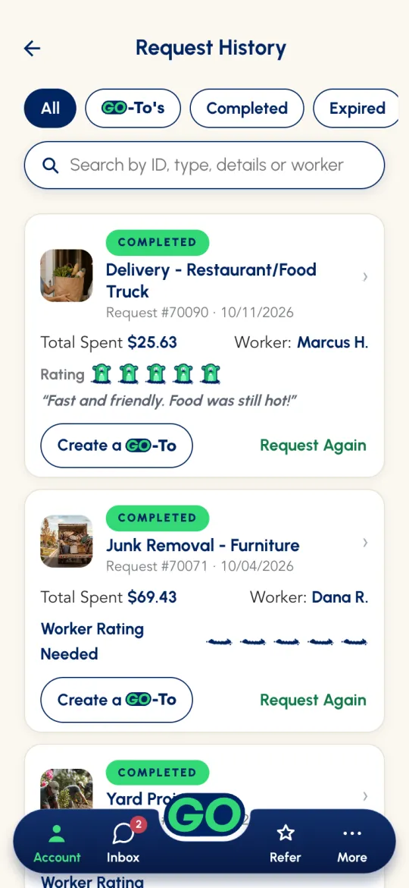
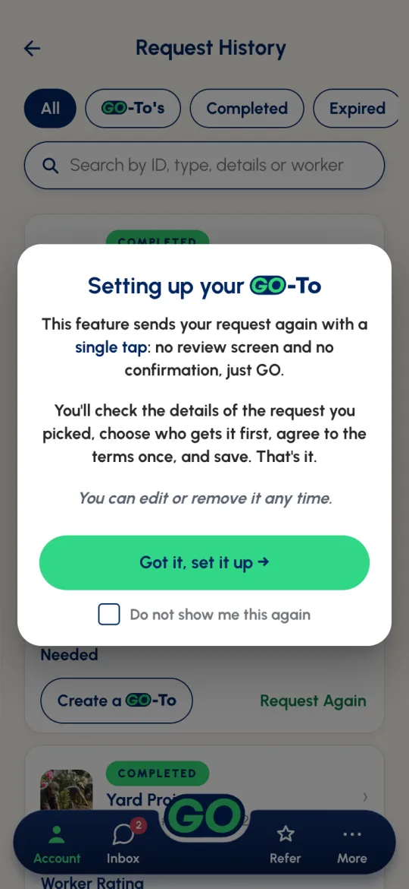
Fees & pricing, explained
Your offer is 100% what your worker earns. Workers pay no platform fees. On top of your offer, a small Request fee applies. In the app it's one line, and the ⓘ beside it breaks it down:
| Fee | Amount | What it's for |
|---|---|---|
| Gopher Fee | $0.99 – $4.99 | The fee to use the Gopher Marketplace for the service you chose (see below) |
| Instant Transfer Fee | 8% | Of your offer, the cost of items and the fees above, rounded up to the cent. It helps make sure your worker is paid quickly through Stripe's Instant Payout. |
| Age-Restricted Fee | $1.99 | Only on age-restricted requests. It covers age-restricted delivery and ID checks. |
| TrustShield™ Discount | – $1.00 | Taken off every age-restricted request when you have the free TrustShield badge |
| Promo code | varies | Add one on the review step with Have a Promo Code? |
| Service | Gopher Fee |
|---|---|
| Delivery | $0.99 |
| Custom Task | $1.99 |
| Need a Ride · Hourly / Day Labor | $2.99 |
| Moving · Junk Removal · Yard Project | $3.99 |
| Home Services | $4.99 |
If you asked for bids, the fees show as Pending… until you hire someone, because they depend on the price.
A worked example
A Delivery where you want to pay your worker $30 in total, including $20 you're paying back for the items they buy:
Your worker receives the full $30, and using the app cost you just $3.47. In the app, the two fees appear together as Request fee $3.47.
Age-restricted requests & TrustShield
For age-restricted items, like alcohol or tobacco, the law and our policy are strict, and we follow them to the letter.
- 21 and older only. The Includes age-restricted items switch on a Delivery only appears for members 21 and older. If a description mentions an age-restricted item, the app asks whether it really is one. For members under 21, the app explains it's an item we can't deliver and asks you to edit the request.
- Agree to the Age-Restricted Waiver. When you tap Submit Request, a waiver confirms you're 21 or older with a valid government-issued ID to show your worker. Tap I Agree to send, or Edit Request to go back.
- Be there with your ID. You must be present with a valid government-issued ID when your worker arrives. Contactless delivery is never allowed for these items, so edit out any “leave it at the door” instructions.
- No ID, no refund. If you can't show ID after your worker has bought the items, you're still responsible for the cost of the items and your offer, and the request isn't refundable. Don't request these unless your ID will be on hand.
- You have to be there. If your worker arrives and you're not at the door, they start a 10-minute timer. You get a push notification, a text and an email, and the app shows a banner, Your worker is at your door to check your ID, with the countdown and buttons to text or call them. If the timer runs out, the request completes as a No-Show Completion once our team has reviewed it: your worker keeps the items and is paid in full, and it's not refundable.
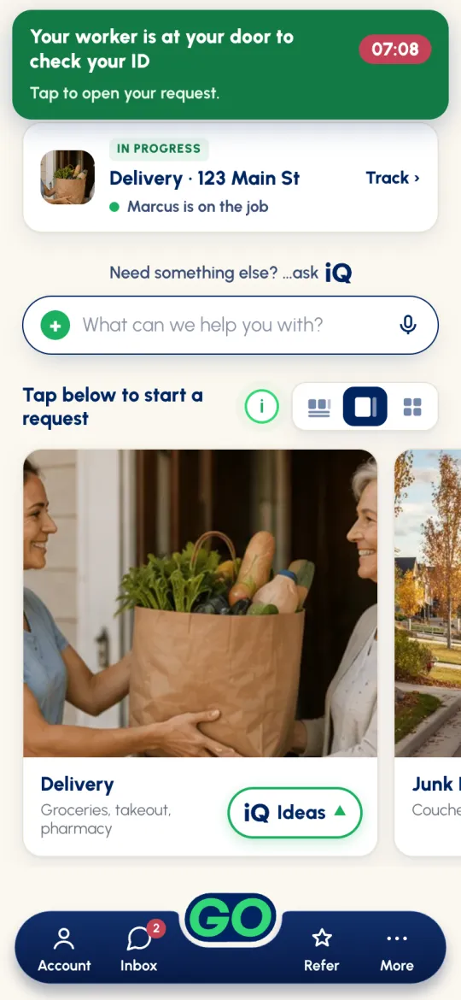
Gopher TrustShield™: free, optional, and saves you money
TrustShield is optional and free for members 21 and older. Verify your ID once, right in the app: open Account → Add TrustShield Verification, or tap Add Gopher TrustShield™ under the age-restricted switch on a Delivery. Have your physical ID handy and allow camera access. You'll photograph the front and back of your ID, then take a selfie. It takes about two minutes. After that you get:
- $1 off every age-restricted request.
- Your ID on file, so there's nothing to submit on future age-restricted requests.
You'll still show your physical ID at the in-person hand-off. That never changes.
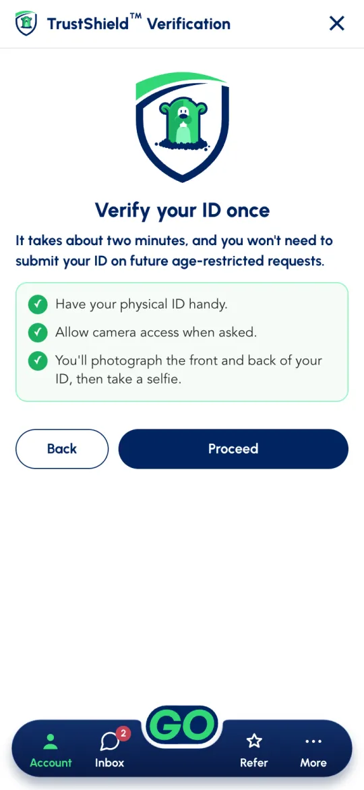
Safety & the no-charge promise
- Your money is protected. When a worker accepts, Stripe places a temporary hold on your card. You're only charged once you confirm the job (or it confirms itself). If the job isn't completed, the hold is released back to your card.
- No worker, no charge. If we can't connect you with a worker, your request simply ends, with no charge and no authorization.
- Gopher isn't auto-fulfillment. It's an open marketplace, and a worker decides whether your offer is worth it. A fair offer in an active area is usually accepted fast.
- You choose who comes back. Save workers you love as MY Gophers, and block anyone you don't want to see your requests again, from that request in Request History.
Refer Gopher
Tap Refer on the bottom bar. Invite friends, neighbors and workers to Gopher.
- Refer Gopher Request: show your personal QR code, or tap Refer via SMS or Refer via email. You can also copy your referral link.
- Recommend MY Gopher(s): recommend a trusted worker you've hired.
- Refer Gopher Go: invite a trusted local worker to earn on Gopher Go.
- Referral tracking: see who's Pending, Added and Active.
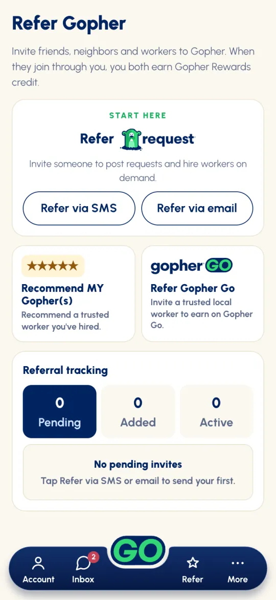
Help & your account
You're ready to go! For anything else, tap More:
- Help Center: the Gopher Request Tutorial, FAQs, and Message Support, which opens a chat with us right in the app.
- Your workers: MY Gophers and Blocked workers.
- About Gopher: Services Offered, Social Media Links, the Gopher Website, Become A Gopher, and Terms & Conditions.
- Account: Sign Out and Delete Account.
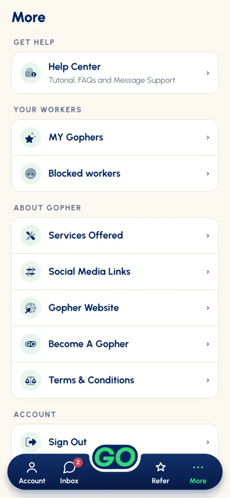
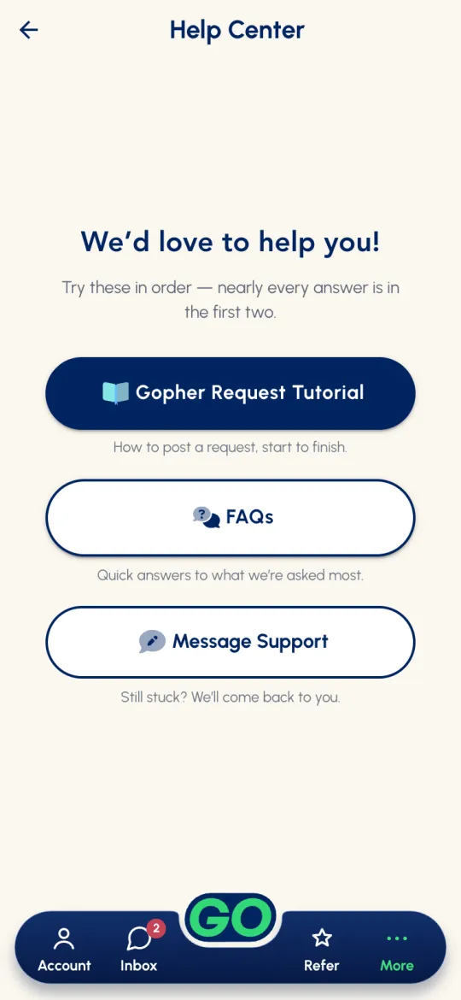
You can also browse the full FAQs or email us at support@gophergo.io.
Now you're ready to Gopher it!